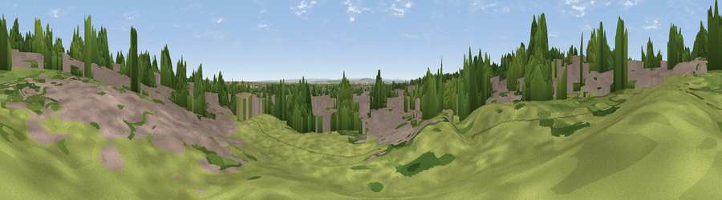

Viewpoint near Chigwell
#43011 in England · top 49% of its area beats it · near ChigwellWhere it is
The exact computed spot (TQ 44517 92242). Click the marker for map links.
The view, rendered

A 360° render of this exact spot computed from the terrain model, tree cover and land cover — summer colours, afternoon light, calibrated against photographs of famous viewpoints. Real trees, hedges and buildings will differ in detail.
The panorama
Grey silhouette: terrain skyline in each direction (720 bearings, Earth curvature and refraction included). Dashed green: skyline with trees (+15 m) and buildings (+8 m) as obstacles. Blue strip: how far the ground is visible on each bearing.
Where the view opens
Wedge length = distance to the farthest visible ground on that bearing (vegetation-aware). Rings at 10, 25 and 50 km.
What fills the view
49% built-up · 27% woodland · 21% grassland · 2% cropland
Angular shares of the visible panorama (visual magnitude), not map area. Landscape diversity 0.49 (0–1 Shannon).
Key numbers
More beautiful places nearby
The staircase of upgrades: each row has a higher view potential than everything closer. Driving times are estimates from straight-line distance, calibrated against real road routing — check an actual route before setting out.
| Place | Direction | Drive | Score |
|---|---|---|---|
| Hog Hill | E · 3 km | ~7 min | 21.1 |
| Viewpoint near Chigwell Row | E · 3 km | ~8 min | 28.0 |
| Lambourne Hill | NE · 4 km | ~10 min | 28.3 |
| Moon Hill | W · 6 km | ~14 min | 30.6 |
| Viewpoint near Sewardstonebury | WNW · 7 km | ~14 min | 32.7 |
| Viewpoint near Great Warley | ESE · 13 km | ~23 min | 40.0 |
| Jury Hill | E · 18 km | ~30 min | 48.5 |
| Viewpoint near Horndon On The Hill | ESE · 24 km | ~39 min | 51.8 |
51.61047, 0.08569 · source: osm viewpoint · position refined by local search. Computed location — check access rights before visiting.